Maintenir le bouton Pouvoir ouvre une roue : on glisse vers le pouvoir voulu (la direction compte), on relâche pour lancer, on relâche au centre (croix) pour annuler. Un tap bref lance le pouvoir par défaut (le dernier utilisé). L'entrée envoyée au jeu reste Input.slot : aucun changement de simulation.
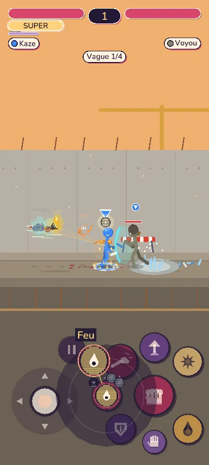
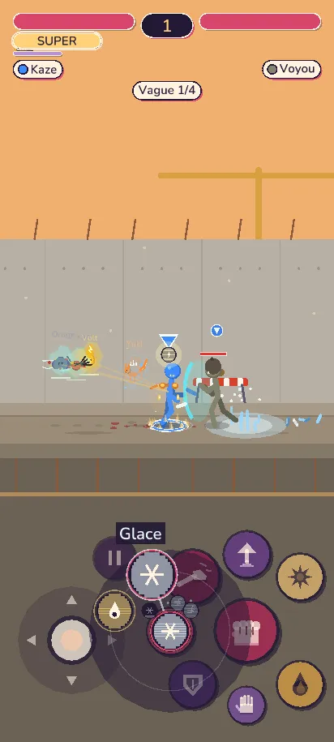
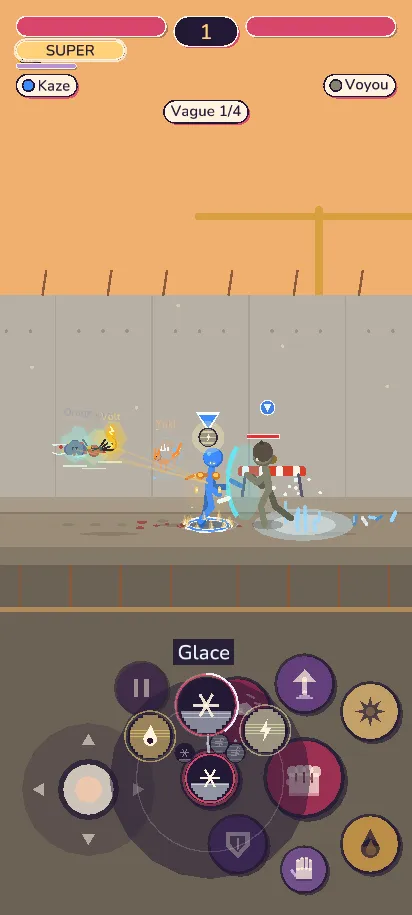
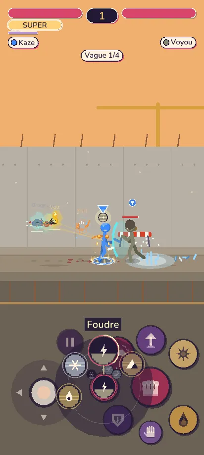
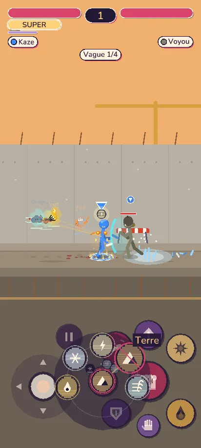
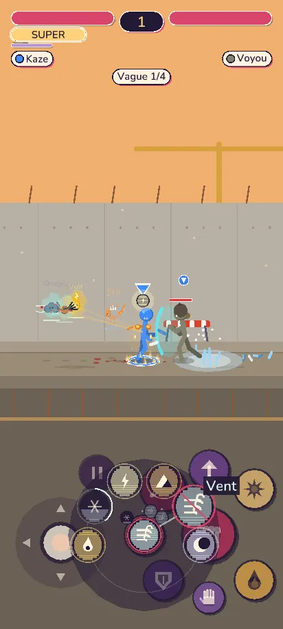
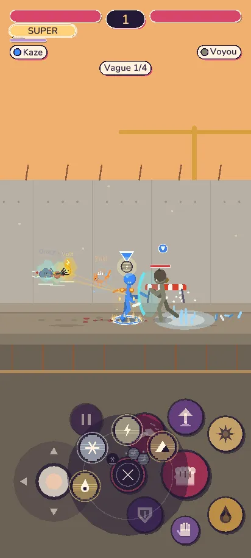
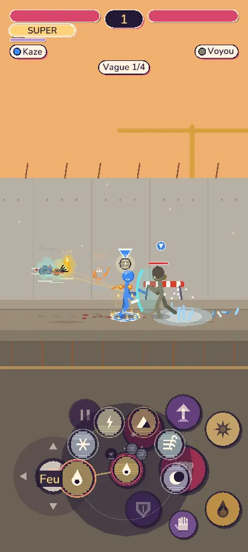
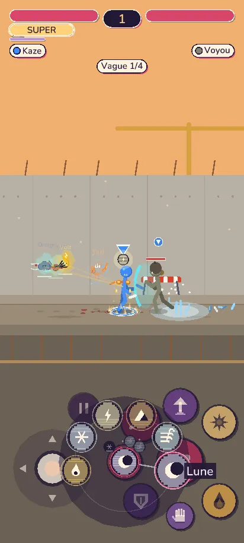
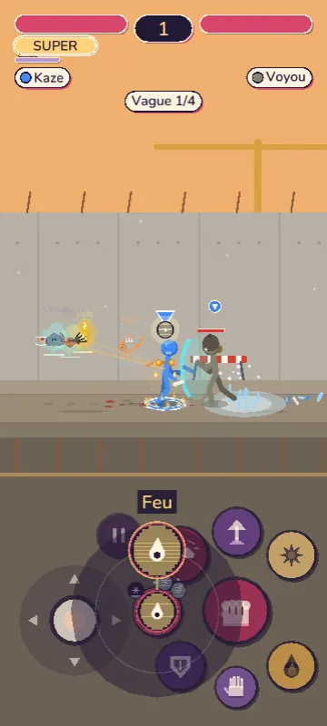
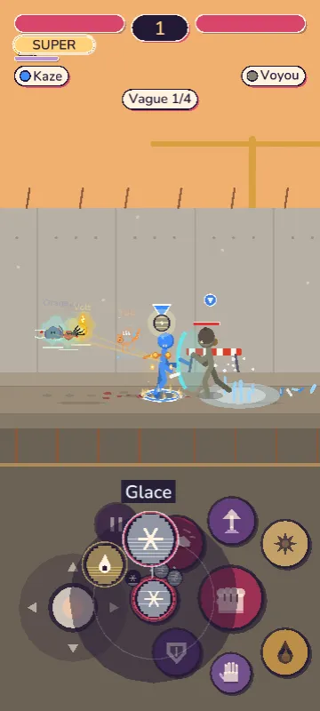
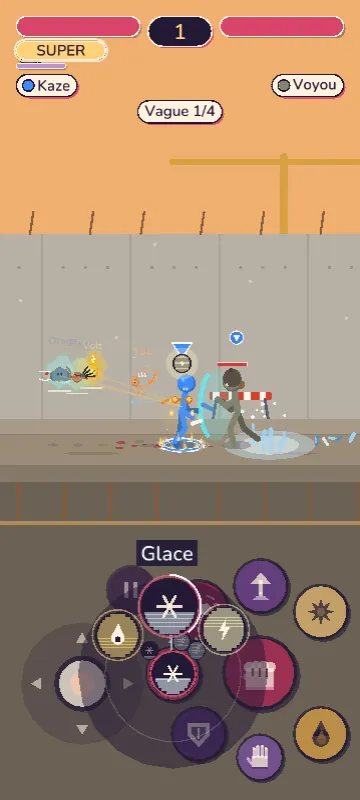
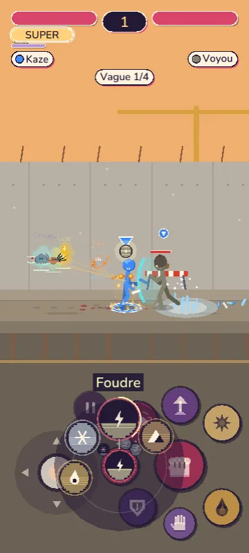
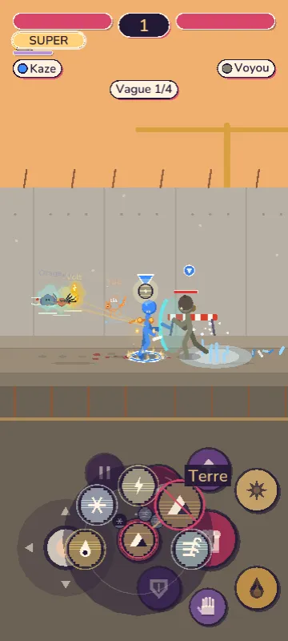
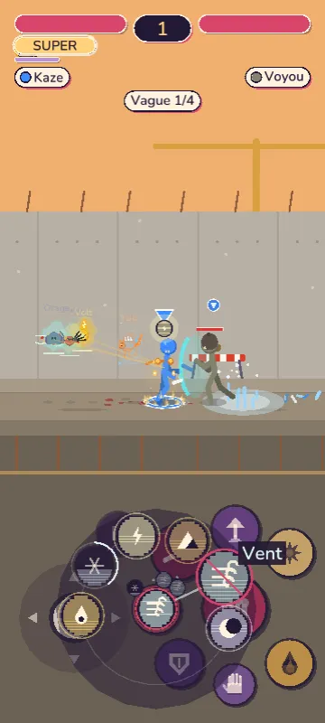
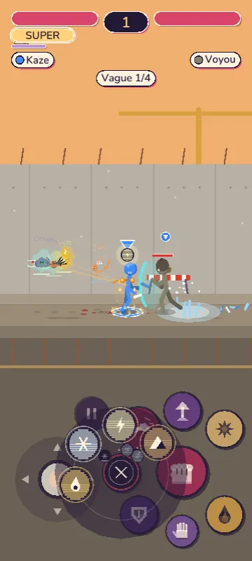
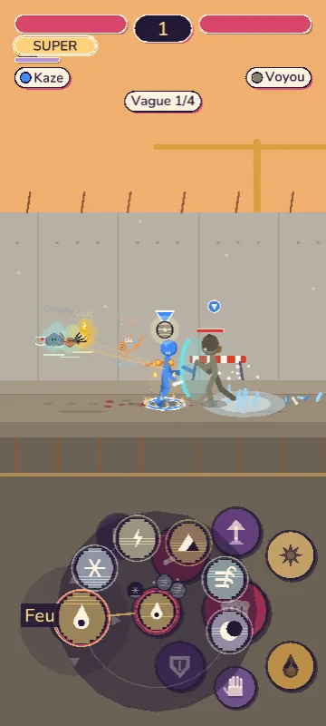
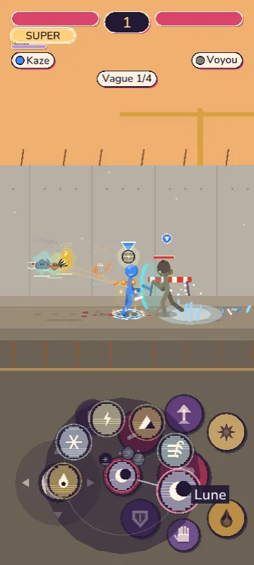
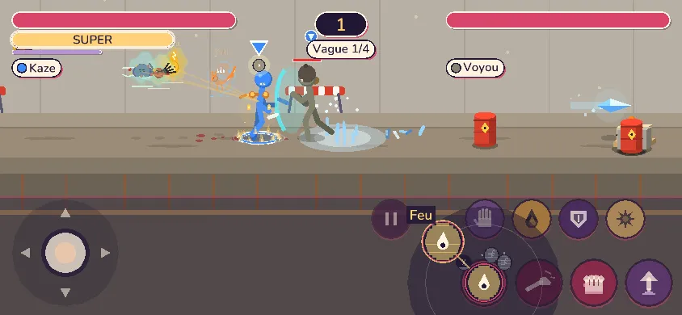
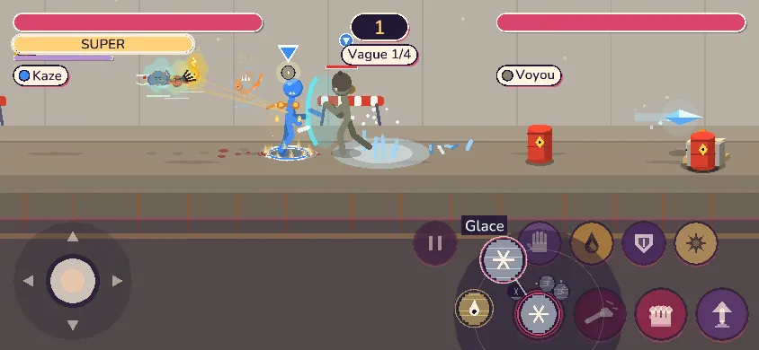
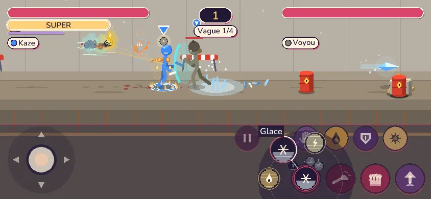
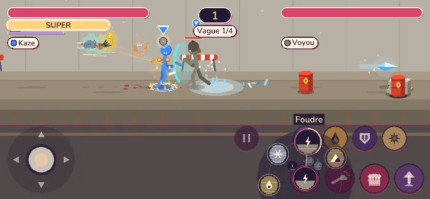
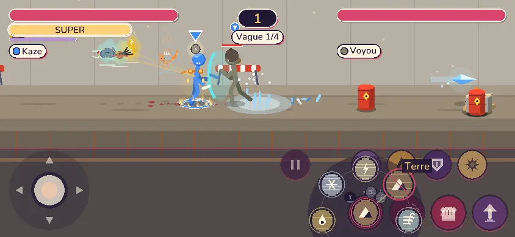
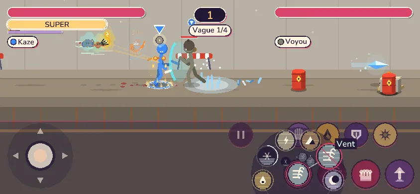
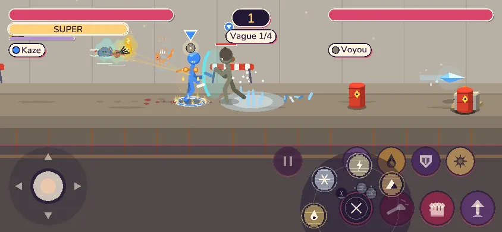
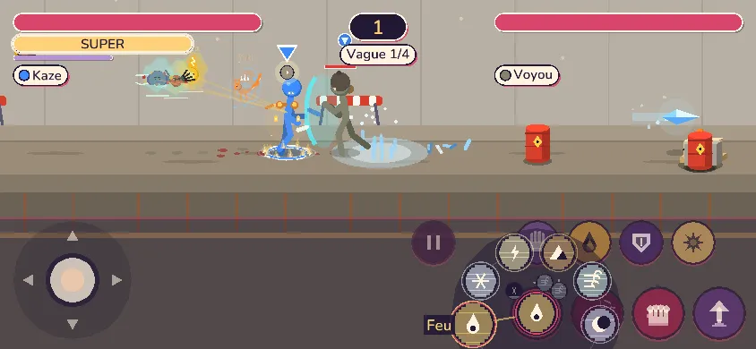
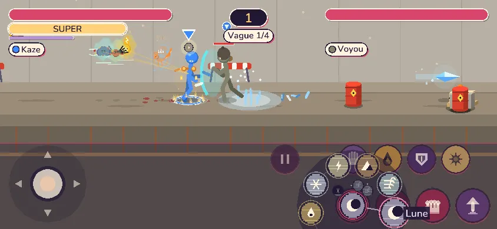
Anneau plein = prêt ; arc partiel = recharge ; barre diagonale rouge = Ki insuffisant ; croix au centre = annuler. Le nom du pouvoir visé s'affiche au-delà de son icône (hors du doigt).